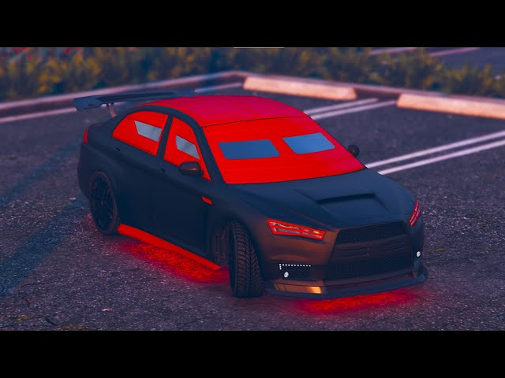

Michael De Santa es un exladrón de bancos que vive bajo protección de testigos en Los Santos después de traicionar a sus antiguos compañeros. Aunque aparenta llevar una vida acomodada en su mansión de Rockford Hills, su existencia está marcada por el tedio y la frustración, atrapado entre una familia disfuncional—una esposa infiel, Amanda, y dos hijos problemáticos, Jimmy y Tracey—y su añoranza por la emoción de su pasado criminal. Su vida da un vuelco cuando conoce a Franklin Clinton y se reencuentra con Trevor Philips, su antiguo socio, quien descubre que Michael lo traicionó años atrás. A lo largo del juego, Michael lucha por equilibrar sus conflictos personales, su deseo de redención y su inevitable regreso al mundo del crimen. Con un humor ácido y una obsesión por el cine, su personaje sirve como una sátira del sueño americano y la crisis de la mediana edad, consolidándose como uno de los protagonistas más memorables de la saga Grand Theft Auto.
Franklin Clinton
Franklin Clinton es un joven ambicioso originario de los barrios marginales de Los Santos. Criado en las calles de Davis, un vecindario plagado de pandillas y violencia, Franklin busca desesperadamente una salida a su vida de delitos menores trabajando como repo-man para un deshonesto vendedor de autos. Su destino cambia cuando conoce a Michael De Santa, un exatracador de bancos que se convierte en su mentor y lo introduce en el mundo del crimen organizado. A diferencia de sus socios Michael y Trevor, Franklin mantiene una actitud más pragmática y centrada, demostrando ser un estratega hábil y un conductor excepcional durante los golpes que ejecutan. Aunque aspira a una vida de lujo y éxito, nunca pierde contacto con sus raíces, manteniendo una complicada relación con su mejor amigo Lamar Davis y su exnovia Tanisha. Su personaje simboliza la lucha por ascender socialmente en un sistema corrupto, combinando astucia callejera con ambición, lo que lo convierte en el puente entre el caos de Trevor y los conflictos existenciales de Michael en la narrativa del juego.
Trevor Philips
Trevor Philips es un ex-piloto militar y psicópata adicto a las drogas, Trevor vive en un tráiler en el desierto de Blaine County, donde dirige su negocio criminal, Trevor Philips Enterprises, dedicado al tráfico de metanfetaminas y armas. Su personalidad violenta, sus arranques de ira y su falta de filtro moral lo convierten en una bomba de tiempo humana, pero también en un genio táctico cuando se trata de crímenes. Aunque parece carecer por completo de empatía, muestra una extraña lealtad hacia sus pocos amigos, especialmente hacia Michael De Santa, su antiguo compañero de atracos a quien cree muerto hasta reencontrarse con él años después. Este descubrimiento desencadena una tormenta de resentimiento y violencia, ya que Trevor nunca superó la supuesta "traición" de Michael. A lo largo del juego, su comportamiento errático y su humor negro sirven como crítica a la decadencia social y la corrupción en Estados Unidos, convirtiéndolo en un personaje tan terrorífico como fascinante dentro del universo de GTA.
Qué debes hacer primero?
Juega el prólogo y las primeras misiones obligatorias.
El juego empieza con el prólogo en North Yankton. Después controlas a Franklin, y luego conocerás a Michael. Estas misiones son lineales y sirven como tutorial para aprender a conducir, disparar y moverte por el mundo.
Desbloquea a los tres personajes
Primero tienes a Franklin, luego a Michael, y más adelante se une Trevor. Es importante avanzar hasta que puedas cambiar libremente entre los tres, ya que cada uno tiene habilidades especiales y misiones únicas.
Sigue las misiones principales (marcadas en el mapa con letras)
Las misiones de historia están marcadas con las letras F, M o T (según el personaje). También hay otras letras como L (Lester) o D (Devin), que también avanzan la historia.
Recomendaciones para jugar mejor el modo historia
Haz primero las misiones principales
Avanza en la historia hasta desbloquear los golpes (heists), ya que son la parte más emocionante y rentable del juego.
No ignores las misiones de Lester
Son clave para los golpes y, además, influyen en la bolsa de valores. Es recomendable guardar esas misiones secundarias de asesinato para el final del juego, cuando tengas más dinero y puedas invertir bien.li
Mejora tus habilidades
Cada personaje tiene estadísticas que mejoran con el uso: puntería, manejo, resistencia, etc. Por ejemplo, conducir a alta velocidad mejora la habilidad de conducción.
Gana dinero sabiamente
Evita gastar demasiado al principio. Guarda dinero para invertir en la bolsa después de ciertas misiones clave. Usa el móvil para invertir en BAWSAQ y LCN.
Compra propiedades útiles
Algunas propiedades como el hangar de Trevor o el taller de Los Santos Customs generan ingresos pasivos y desbloquean misiones secundarias.
Después de terminar la historia
Una vez termines la misión final (hay tres posibles finales), puedes seguir explorando el mundo, haciendo actividades secundarias, misiones de extraños y locos, y completando el juego al 100%. También puedes:
Hacer acrobacias, carreras, desafíos.
Buscar piezas de nave espacial, fragmentos de cartas y otras coleccionables.
Usar el dinero para comprar armas, vehículos y mucho mas.
¿Qué es GTA V Online?
GTA Online es el modo multijugador de Grand Theft Auto V. Puedes crear tu personaje, ganar dinero, subir de nivel, adquirir propiedades, realizar golpes (heists), dirigir negocios criminales y competir o cooperar con otros jugadores en un mundo abierto.
¿Qué hacer primero en GTA Online?
Crea tu personaje
Al iniciar por primera vez, diseñas tu personaje y eliges atributos que afectan ligeramente tus estadísticas (como resistencia o conducción). Luego, juegas un tutorial obligatorio donde aprendes lo básico (misiones, armas, conducción, etc.).
Completa el tutorial
El tutorial incluye:
Una carrera.
Una misión con Lamar.
Visita a Ammu-Nation para comprar un arma.
Un atraco a una tienda.
Después de eso, el juego te deja libre.
Misiones rápidas para ganar dinero al inicio
Realiza misiones de contacto (de Lamar, Gerald, Simeon, etc.). Son fáciles, se pueden hacer solo y dan dinero decente.
Juega misiones de supervivencia o carreras para ganar RP (experiencia).
Roba tiendas para conseguir algo de efectivo rápido (aunque dan poco).
Únete a eventos semanales que suelen ofrecer el doble o triple de GTA$ y RP.
¿Qué comprar primero?
Ahorra hasta tener al menos $200,000 para comprar:
Un departamento con garaje y sala de planificación de golpes (mínimo High-End, por ejemplo: Del Perro Heights o Eclipse Towers).
Esto te permite acceder al primer golpe online: Fleeca Job (para 2 jugadores).
Luego, enfócate en comprar:

Un auto armado y blindado (como el Kuruma blindado o el Nightshark).
Armas básicas: pistola, escopeta, fusil (como el Carbine Rifle).
Un buzón de municiones completo antes de cada misión.
Inicia los golpes
Los golpes son misiones cooperativas de varias fases que dan mucho dinero. El primero es el Fleeca Job, solo necesitas un compañero y es ideal para comenzar. Luego puedes acceder a golpes más grandes como:
Prisión Break
Serie A Funding
Pacific Standard Job
Para estos necesitarás 4 jugadores y una buena coordinación.
Empieza un negocio criminal
Una vez tengas algo de dinero, puedes iniciar negocios más lucrativos. Recomendado orden:
Club de moteros – Puedes vender drogas y empezar negocios como cocaína, metanfetaminas, etc.
Oficina de ejecutivo + almacén – Para robar y vender mercancía.
Bunker – Para fabricar y vender armas.
Arcade o Sala recreativa – Para planear el gran golpe al Casino (uno de los golpes más rentables).
Cayo Perico Heist – Golpe para un solo jugador; requiere comprar un submarino Kosatka.
Consejos generales para progresar
No gastes dinero en cosas innecesarias al principio como ropa cara, autos de lujo o aviones.
Únete a eventos semanales: cada semana Rockstar ofrece bonificaciones (x2 o x3 en dinero/RP) en ciertos modos.
Juega con amigos o únete a una crew: facilita golpes y actividades cooperativas.
Protege tu dinero: deposita siempre el dinero en el banco desde el teléfono (Maze Bank) para que no te lo roben otros jugadores.
¿Qué hacer después?
Una vez tengas negocios funcionando y algo de capital, puedes:
Comprar y mejorar propiedades de lujo (yates, clubes nocturnos, garajes).
Invertir en vehículos especiales como el Oppressor Mk II (muy útil, pero costoso).
Participar en carreras, eventos de arena, guerra comercial, modos adversario, etc.